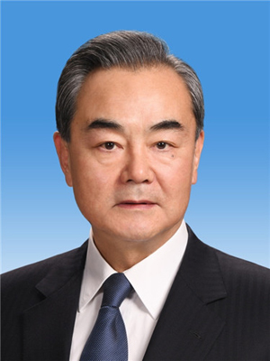
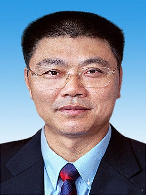
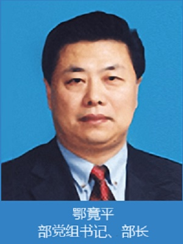
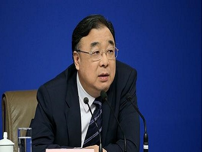

中华人民共和国国务院，即中央人民政府，是最高国家权力机关的执行机关，是最高国家行政机关。国务院由总理、副总理、国务委员、各部部长、各委员会主任、审计长、秘书长组成。国务院实行总理负责制。各部、各委员会实行部长、主任负责制。
2018年3月全国“两会”期间，李克强同志再次当选国务院总理。
2018年党和国家机构改革后，除国务院办公厅外，国务院设置组成部门26个。
-
中华人民共和国外交部（Ministry of Foreign Affairs of the People’s Republic of China）
是中华人民共和国政府的外交机关，是中华人民共和国国务院内主管外交事务的组成部门，负责处理中华人民共和国政府与世界其他国家政府及政府间国际组织的外交事务。
成立于1954年9月，其前身是1949年10月成立的中央人民政府外交部。
2018年3月，根据第十三届全国人民代表大会第一次会议批准的国务院机构改革方案，将中华人民共和国外交部对外援助协调等职责整合，组建中华人民共和国国家国际发展合作署。
2018年3月，王毅同志被任命为外交部部长。

-
中华人民共和国国防部（Ministry of National Defense of the People’s Republic of China）
是中华人民共和国国务院下属的一个部门，是1954年9月第一届全国人大第一次会议决议设立的。主要发布中国国防和军队建设权威信息,旨在对外传递中国军方声音，宣传中国国防政策，加强与外军交流合作，展示中国军队良好形象，促进国防和军队现代化建设。
2018年3月，魏凤和同志被被任命为国防部部长。
-
中华人民共和国国家发展和改革委员会（National Development and Reform Commission）
是国务院的职能机构。前身是国家计划委员会、国家发展计划委员会。
是综合研究拟订经济和社会发展政策，进行总量平衡，指导总体经济体制改革的宏观调控部门。
2018年3月，何立峰同志被任命为国家发展和改革委员会主任。
-
中华人民共和国教育部（Ministry of Education of the People’s Republic of China）
是中华人民共和国国务院主管教育事业和语言文字工作的国务院组成部门。截至2017年7月，教育部设有19个内设司、局，“中国联合国教科文组织全国委员会秘书处”也设在其中。另外，教育部还直接管理15个教育类社会团体和组织。
2016年，陈宝生同志被任命为教育部部长。
-
中华人民共和国科学技术部（Ministry of Science and Technology of the People’s Republic of China）
其主要工作是研究提出科技发展的宏观战略和科技促进经济社会发展的方针、政策、法规；研究科技促进经济社会发展的重大问题；研究确定科技发展的重大布局和优先领域；推动国家科技创新体系建设，提高国家科技创新能力。研究提出科技体制改革的方针、政策和措施；推动建立适应社会主义市场经济和科技自身发展规律的科技创新体制和科技创新机制；指导部门、地方科技体制改革。
2018年3月，根据第十三届全国人民代表大会第一次会议批准的国务院机构改革方案，重新组建中华人民共和国科学技术部。
2018年3月，王志刚同志被任命为科学技术部部长。
-
中华人民共和国工业和信息化部（Ministry of Industry and Information Technology of the People’s Republic of China）
是根据2008年3月11日公布的国务院机构改革方案，组建的国务院直属部门。
主要职责为：拟订实施行业规划、产业政策和标准；监测工业行业日常运行；推动重大技术装备发展和自主创新；管理通信业；指导推进信息化建设；协调维护国家信息安全等。
2010年12月，苗圩同志被任命为工业和信息化部部长。
-
中华人民共和国国家民族事务委员会（State Ethnic Affairs Commission of the People’s Republic of China）
是中华人民共和国国务院组成部门。国家民委承担着执行中国共产党和国家的民族政策，研究民族理论，展开民族工作和民族教育。监督实施和完善民族区域自治制度建设，监督办理少数民族权益保障事宜。
2018年3月，巴特尔同志被任命为国家民族事务委员会主任。
-
中华人民共和国公安部（Ministry of Public Security of the People’s Republic of China）
是国务院主管全国公安工作的职能部门。各省、自治区设公安厅，直辖市设公安局；各市（地、自治州、盟）设公安局（处）；市辖区设公安分局，接受上级公安机关直接领导；各县（市、旗）设公安局，分别接受同级人民政府和上级公安机关领导。县（市、区、旗）公安局下设公安派出所，由县（市、区、旗）公安机关直接领导和管理。
2018年3月，根据第十三届全国人民代表大会第一次会议批准的国务院机构改革方案，将公安部的消防管理职责整合，组建中华人民共和国应急管理部；将中华人民共和国公安部的出入境管理、边防检查职责整合建立健全签证管理协调机制，组建中华人民共和国国家移民管理局，由中华人民共和国公安部管理。
2018年3月，赵克志同志被任命为公安部部长。
-
中华人民共和国国家安全部（Ministry of State Security of the People’s Republic of China）
是中华人民共和国国务院的组成部门，是中国政府的反间谍机关和政治保卫机关，可以行使宪法和法律规定的公安机关的侦查拘留、预审和执行逮捕的职权。
1983年7月由原中共中央调查部整体、公安部政治保卫局以及中央统战部部分单位、国防科工委部分单位合并而成。
2016年11月，陈文清同志被任命为国家安全部部长。
-
中华人民共和国民政部（Ministry of Civil Affairs of the People’s Republic of China）
主管有关社会行政事务的国务院组成部门。前身是成立于1949年的“中央人民政府内务部”，1954年改称“中华人民共和国内务部”，1969年撤消，1978年设立“中华人民共和国民政部”，并延续至今。
2016年11月，黄树贤同志被任命为民政部部长。
-
中华人民共和国司法部（Ministry of Justice of the People's Republic of China）
是主管全国司法行政工作的国务院组成部门。
新中国成立后，根据《中华人民共和国中央人民政府组织法》，于1949年10月30日设立中央人民政府司法部。1954年《中华人民共和国宪法》颁布后，改称中华人民共和国司法部。
傅政华现任司法部部长。
-
中华人民共和国财政部（Ministry of Finance of the People’s Republic of China）
是中华人民共和国负责财务的国务院组成部门。其前身为1949年10月1日成立的中央人民政府财政部。
2018年3月，根据第十三届全国人民代表大会第一次会议批准的国务院机构改革方案，将财政部有关农业投资项目管理职责整合，组建中华人民共和国农业农村部；将财政部的中央预算执行情况和其他财政收支情况的监督检查的职责划入中华人民共和国审计署。
2018年3月，刘昆同志被任命为财政部部长。
-
中华人民共和国人力资源和社会保障部（Ministry of Human Resources and Social Security of the People's Republic of China）
是统筹机关企事业单位人员管理和统筹城乡就业和社会保障政策的中国国家权力机构。十一届全国人大一次会议第四次全体会议（2008.03.11）“国务院机构改革方案”审议通过组建，同时组建国家公务员局，由人力资源和社会保障部管理。不再保留人事部、劳动和社会保障部。2008年3月31日正式挂牌，而其官方网站也于同日开始运行。
2018年3月，根据第十三届全国人民代表大会第一次会议批准的国务院机构改革方案，将人力资源和社会保障部的军官转业安置职责整合，组建中华人民共和国退役军人事务部；将人力资源和社会保障部的城镇职工和城镇居民基本医疗保险、生育保险职责整合，组建中华人民共和国国家医疗保障局。
2018年3月，张纪南同志被任命为人力资源和社会保障部部长。
-
中华人民共和国自然资源部（Ministry of Natural Resources of the People’s Republic of China）
根据第十三届全国人民代表大会第一次会议批准的国务院机构改革方案，设立中华人民共和国自然资源部，为国务院组成部门。
2018年3月，陆昊同志被任命为自然资源部部长。
-
中华人民共和国生态环境部（Ministry of Ecology and Environment of the People's Republic of China）
是国务院组成部门，2018年3月根据第十三届全国人民代表大会第一次会议批准的国务院机构改革方案设立。
2018年3月，李干杰同志被任命为生态环境部部长。
-
中华人民共和国住房和城乡建设部（Ministry of Housing and Urban-Rural Development of the People’s Republic of China）
是2008年中央“大部制”改革背景下新成立的中央部委，是中华人民共和国负责建设行政管理的国务院组成部门，负责国家建设方面的行政管理事务。
其前身是1979年3月12日中共中央批准成立“国家城市建设总局”，直属国务院，由国家基本建设委员会代管。
2008年3月15日，根据十一届全国人大一次会议通过的国务院机构改革方案，“建设部”改为“住房和城乡建设部”。
2018年3月，根据第十三届全国人民代表大会第一次会议批准的国务院机构改革方案，将住房和城乡建设部的城乡规划管理职责整合，组建中华人民共和国自然资源部；将中华人民共和国住房和城乡建设部的自然保护区、风景名胜区、自然遗产、地质公园等管理职责整合，组建中华人民共和国国家林业和草原局，由中华人民共和国自然资源部管理。
2017年6月，王蒙徽同志被任命为住房城乡建设部部长。

-
中华人民共和国交通运输部（Ministry of Transport of the People's Republic of China）
是中华人民共和国国务院下属的一个部门。
是根据2008年国务院机构改革方案，在原交通部的基础上组建的，国家民用航空局、国家邮政局等部门均在此次“大部制”改革中划归交通运输部管理。
2016年9月，李小鹏同志被任命为交通运输部部长。
-
中华人民共和国水利部（Ministry of Water Resources of the People’s Republic of China）
成立于1949年10月，为国务院组成机构。
2018年3月，鄂竟平同志被任命为水利部部长。

-
中华人民共和国农业农村部（Ministry of Agriculture and Rural Affairs of the People's Republic of China）
是国务院组成部门，2018年3月根据第十三届全国人民代表大会第一次会议批准的国务院机构改革方案设立。
2018年3月，韩长赋同志被任命为农业农村部部长。
-
中华人民共和国商务部（Ministry of Commerce of the People’s Republic of China）
是中华人民共和国设立的主管国内外贸易和国际经济合作的部门，隶属于中华人民共和国国务院。
根据第十届全国人民代表大会第一次会议批准的国务院机构改革方案和《国务院关于机构设置的通知》（国发20038号）组建中华人民共和国商务部。
2017年2月，钟山同志被任命为商务部部长。
-
中华人民共和国文化和旅游部（Ministry of Culture and Tourism of the People's Republic of China）
是国务院组成部门，2018年3月根据第十三届全国人民代表大会第一次会议批准的国务院机构改革方案设立。
2018年3月，雒树刚同志被任命为文化和旅游部部长。

-
中华人民共和国国家卫生健康委员会（National Health Commission of the People’s Republic of China）
是国务院组成部门，2018年3月根据第十三届全国人民代表大会第一次会议批准的国务院机构改革方案设立。
2018年3月，马晓伟同志被任命为国家卫生健康委员会主任。

-
中华人民共和国退役军人事务部（Ministry of Veteran Affairs of the People's Republic of China）
是国务院组成部门，2018年3月根据第十三届全国人民代表大会第一次会议批准的国务院机构改革方案设立。
2018年3月，孙绍骋同志被任命为退役军人事务部部长。
-
中华人民共和国应急管理部（Ministry of Emergency Management of the People's Republic of China）
是国务院组成部门，2018年3月根据第十三届全国人民代表大会第一次会议批准的国务院机构改革方案设立。
2018年3月，王玉普同志被任命为应急管理部部长。
-
中国人民银行（The People's Bank Of China）
是中华人民共和国的中央银行，中华人民共和国国务院组成部门。在国务院领导下，制定和执行货币政策，防范和化解金融风险，维护金融稳定。
1948年12月1日，在华北银行、北海银行、西北农民银行的基础上在河北省石家庄市合并组成中国人民银行。1983年9月，国务院决定中国人民银行专门行使中国国家中央银行职能。1995年3月18日，第八届全国人民代表大会第三次会议通过了《中华人民共和国中国人民银行法》，至此，中国人民银行作为中央银行以法律形式被确定下来。
中国人民银行根据《中华人民共和国中国人民银行法》的规定，在国务院的领导下依法独立执行货币政策，履行职责，开展业务，不受地方政府、社会团体和个人的干涉。
2018年3月，易纲同志被任命为中国人民银行行长。
-
中华人民共和国审计署（Ministry of Transport of the People's Republic of China）
根据1982年12月4日第五届全国人民代表大会第四次会议通过的《中华人民共和国宪法》第91条的规定，于1983年9月15日正式成立，是国务院26个组成部门之一，在国务院领导下，主管全国的审计工作。审计长是审计署的行政首长，是国务院组成人员。
2017年4月，胡泽君（女）同志被任命为审计署审计长。